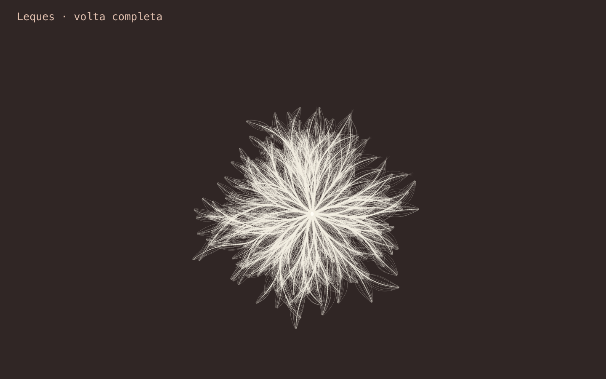
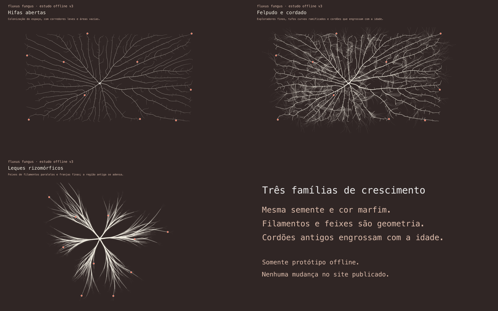
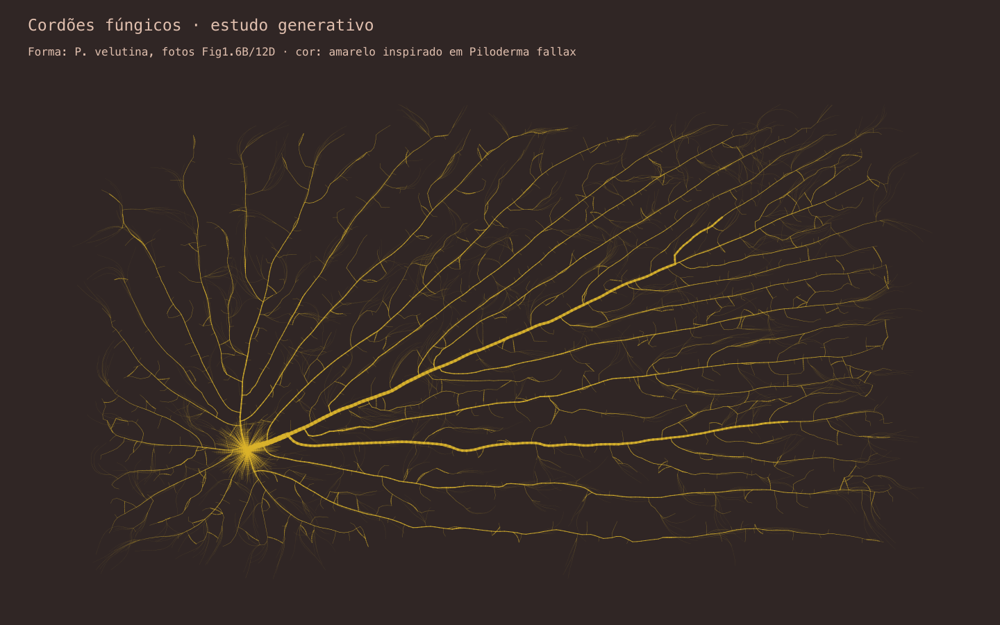
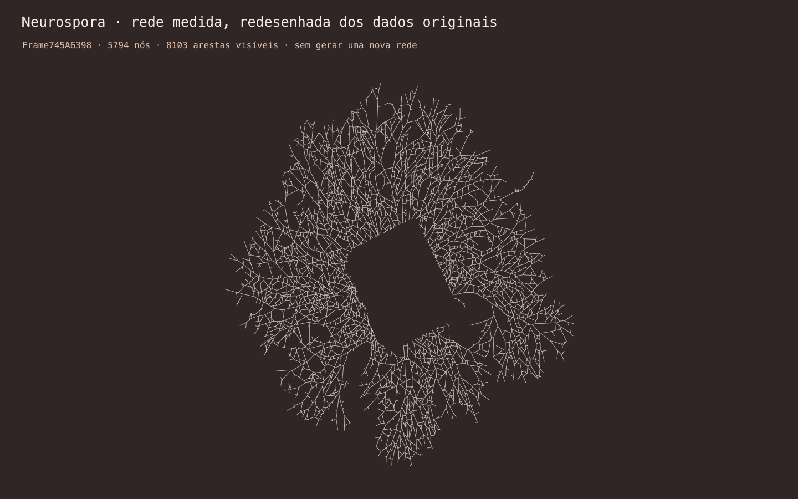
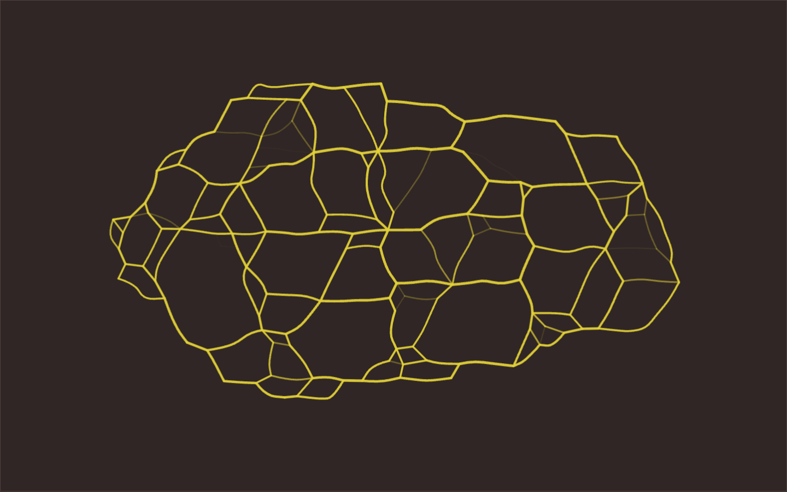

Leques · volta completaMais recente: crescimento defasado, cobertura ao redor da origem e opção de leques abertos.PreviewComparaçãoVídeo
Três famílias · v3Colonização de espaços, felpudo e leques; oito cores e escala manual.PreviewComparar escalas
Cordões fúngicosMorfologia inspirada em P. velutina; heurística de reforço de caminhos.PreviewReferência × estudoVídeo
Neurospora · animação suaveInterpolação de dados observados. Versão corrigida das transições.PreviewVídeoEstático
Physarum · estudo separadoSlime mold não é fungo. Modelo de adaptação por fluxo em malha existente.PreviewVídeo